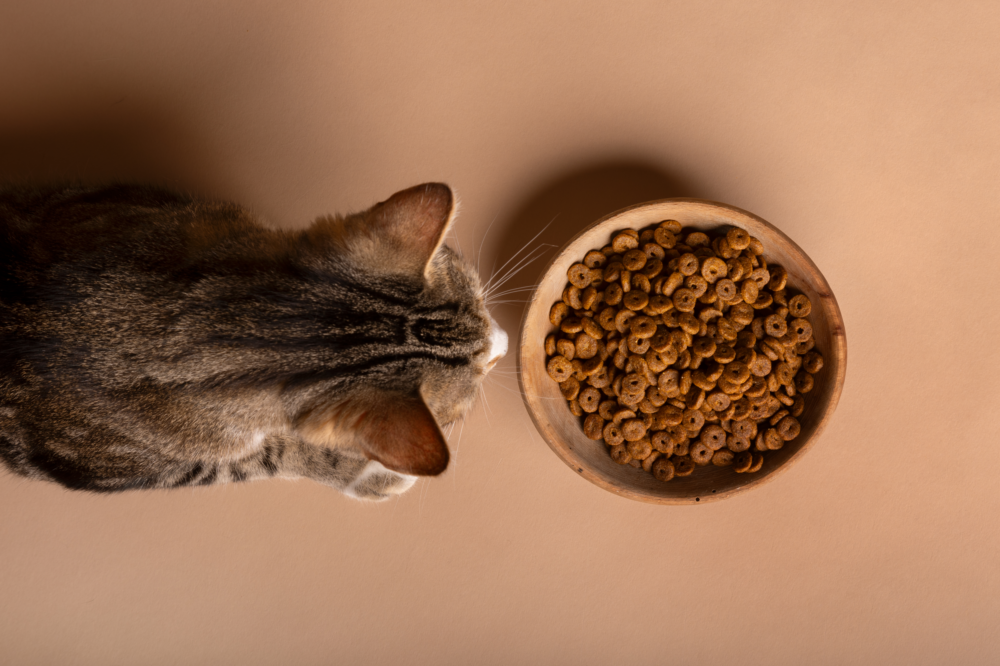
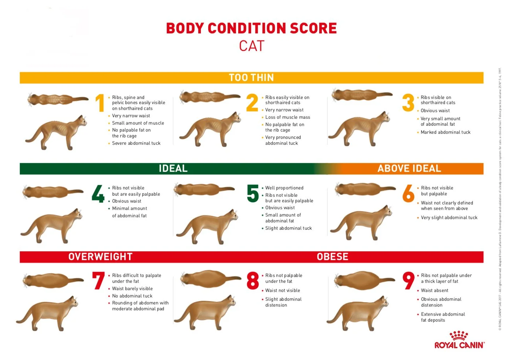
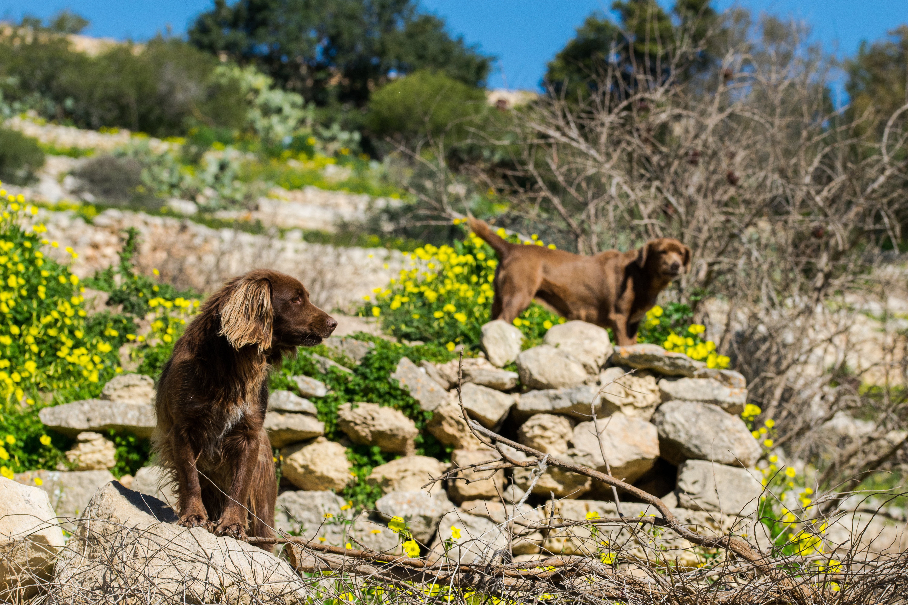
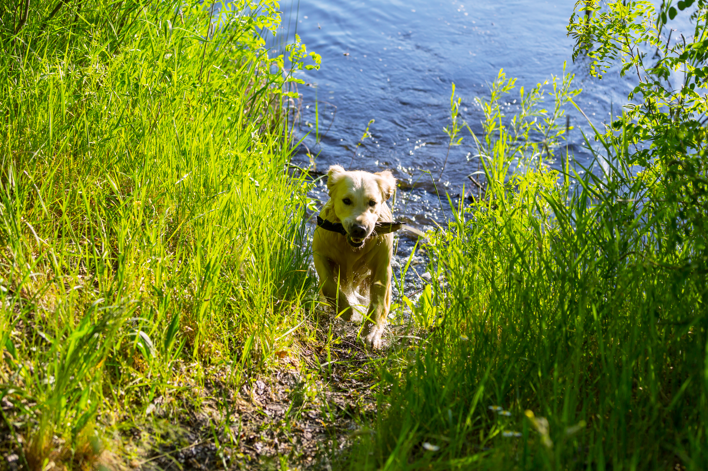

Overfeeding
How to know if your feeding your pet the right amount


Feeding your pet
You will know if you are giving the correct amount of food to your pet through determining whether they are able to maintain a healthy weight, have good energy, and body shape. You can also refer to the food recommendations on their food packaging according to their age, size, and activity level. However, if you are unsure, you can always consult a veterinarian to know how much food you need to give them. Two good articles abot cat and dod excersise from Purina are how much should i feed my dog and how much should i feed my cat.

Exercise
How to know if your pet is getting enough excersise


Excersise cats and dogs
Your pet's exercise needs depend on their age, breed, and health, so regular walks, playtime, and activities suited to them will help keep them healthy and happy. You can tell if your pet is getting enough exercise by noticing whether they maintain a healthy weight, have good energy, and seem relaxed after being active. If your pet is often restless, becomes destructive, or seems to have lots of unused energy, they may need more physical activity. However, every pet is different, so it is important to find a balance that keeps them active without making them overly tired. Two good articles abot cat and dod excersise from Purina are how much exercise does a dog need and 5 tips for cat fitness.